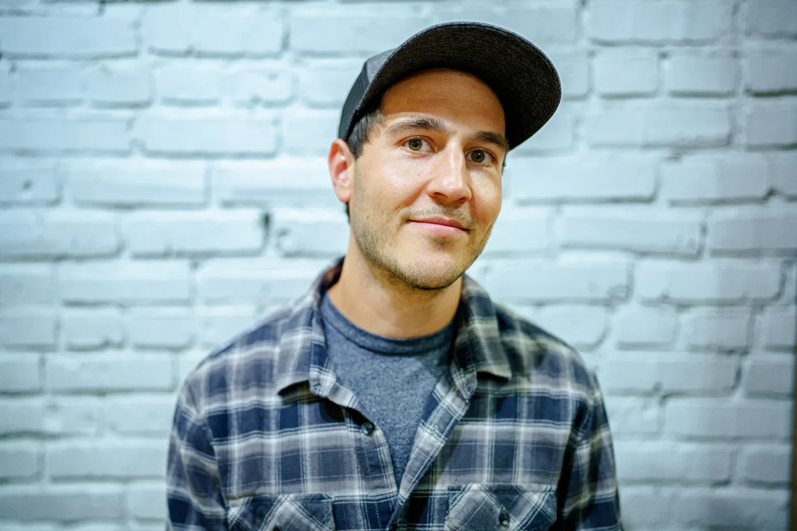
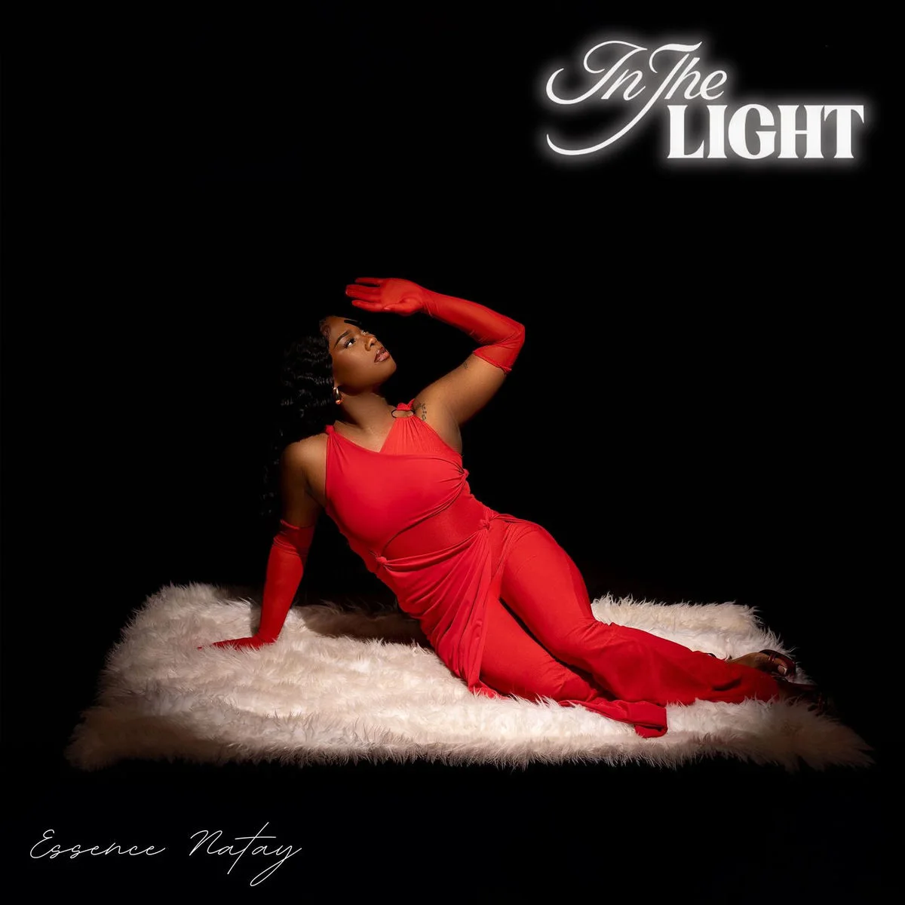
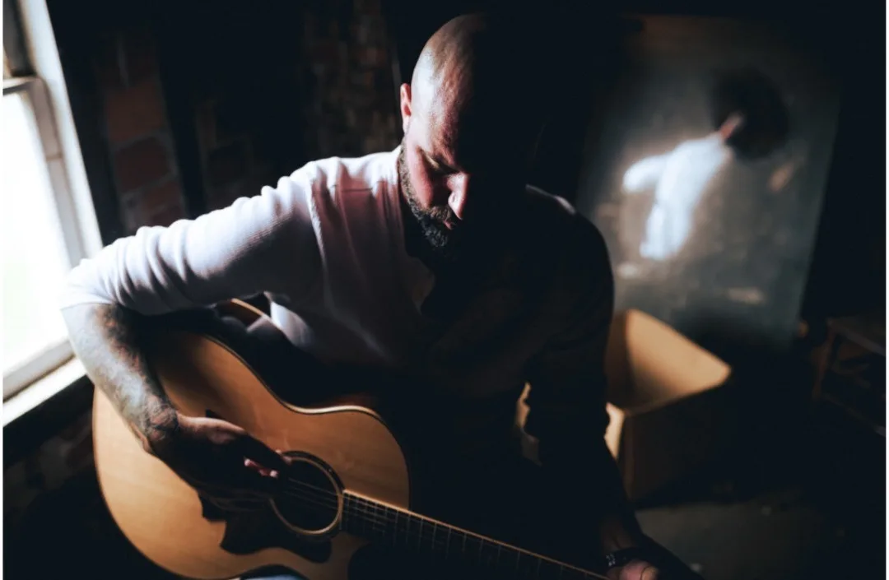
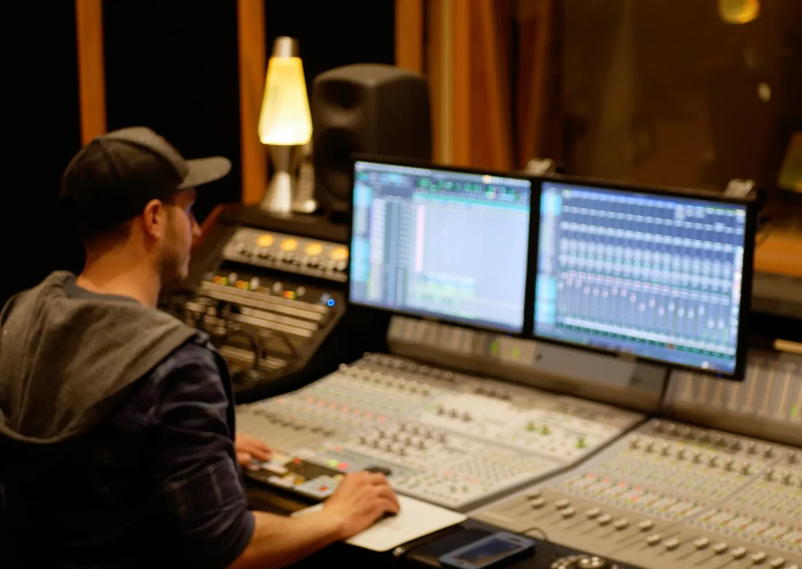

Hi, I’m Greg
I’m a mixer & co-producer who helps dedicated indie artists capture the raw, the catchy, and the quirky.
Whether it’s tightening up transitions, spicing things up with ear candy, or highlighting the emotional core of your vocals…
…my only goal is that your unique creative voice is heard loud and clear.
What the artists are saying

Greg has been the best mixing engineer and producer I’ve worked with, as he has an incredible ability to adapt in order to fit what’s best for the song. His sheer love of music and dedication to his craft makes him a pleasure to work with! He also has a knack for great melodies.
Mishaal Tamer

I’ve been honored to work with Greg for the past 10 years. He is the only engineer that I use. As my sound and style has evolved and grown over the years, Greg grew with me. … Even now as I’m recently signed, Greg is and will remain my go to guy!
Essence Natay

I’ve been working with Greg for years now. He is an incredible engineer. He has a great ear and an impressive attention to detail. The music he’s worked on, including my own, is on par with the most well known and revered music in the industry. I plan on working with Greg for years to come. Rock on!
Ryan Matthew
Let’s make it happen
I’m approachable, easy to work and communicate with. Fill out some brief info and I’ll be in touch with you shortly. Looking forward to hearing from you!
Thanks!
I’ll be in touch with you shortly.
About Greg
Greg Recchia has spent over twenty years chasing the same thing… whatever it is that makes a song special, and making sure the listener can’t ignore it.

He came up the old-school way: audio engineering at SAE in New York City, then years in real rooms like Eastside Sound, Studio Crash in Philly and Water Music in Hoboken. Along the way he got to work on projects with Masego, Nile Rodgers, Pino Palladino, Idris Elba, and a bunch more.
He learned guitar and a handful of other instruments completely by ear, with no theory at all. That sounds like a limitation until you work with him and realize he hears your song the same way the people streaming it will… by whether it moves him or not.
That’s probably why he gets so obsessive about vocals. Harmonies, arrangement, the textures and transitions you don’t notice until somebody takes them out… the last five percent of a record is his favorite part, and it’s usually the part that changes how the whole song feels.
These days he mixes out of his own studio in New Jersey for artists all over the world, and his clients talk about him like he’s in the band. He’ll give you honest feedback, he’ll stay in your corner the whole way, and he’ll care where the song ends up about as much as you do. He’s at his best with artists who have big plans and are already out there chasing them.